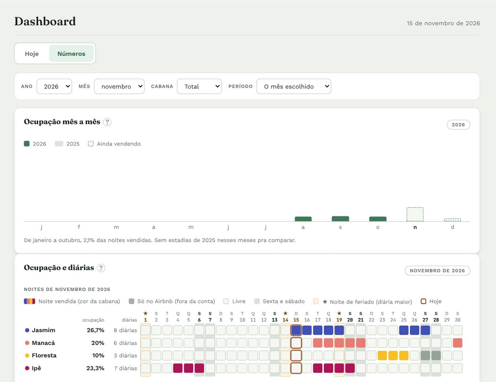
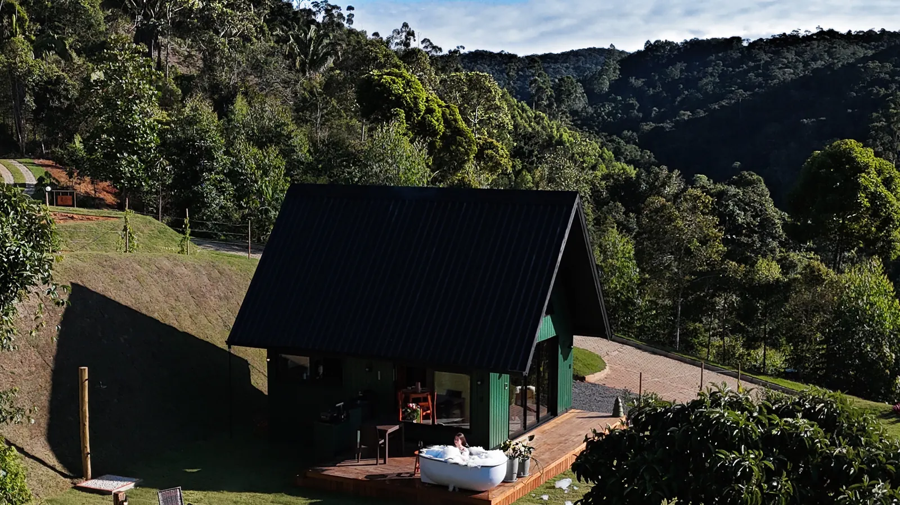

2018 – 2021
Dog27 · logística e e-commerce
Vendas do e-commerce 106% maiores em um ano. Operação no Mercado Livre e na Amazon, com VTEX e o ERP Bling. Picking e packing montados do zero e equipe de até 6 pessoas.
Operações, processos e projetos de IA
Engenheiro de Produção. Passei sete anos em operações, logística e e-commerce. Em 2026 comecei a construir os sistemas que antes eu só especificava, usando IA para programar.
Eu não programo. Defino o problema, escrevo as regras de negócio e os critérios de aceite, e dirijo o Claude Code e o Codex, que escrevem o código. Depois testo, mando auditar e respondo pelo que vai para produção.
rodrigohvm@gmail.comSerra, ES, BrasilPortuguês, inglês avançado, espanhol fluente
Sistema de gestão da Vila Pinheiro, conferência de 24/11/2026.
Projeto 1 · em produção
A Vila Pinheiro Cabanas é uma pousada de quatro cabanas em Santa Teresa (ES), que cofundei. O atendimento era pelo WhatsApp e o controle ficava espalhado em planilhas e ferramentas separadas. Hoje um sistema só responde aos hóspedes, guarda as reservas, avisa a equipe e emite a nota fiscal.
O bot de atendimento não usa IA. No começo usava, e em agosto de 2026 eu tirei. Regras de texto resolvem a leitura dos formulários com custo zero por mensagem e sem resposta inventada para o hóspede. A IA ficou onde rende mais: escrever o código, auditar e gerar relatórios mensais.


Projeto 2 · no ar
O site existe para levar o visitante até a conversa no WhatsApp. Não tem motor de reservas nem pagamento online, por decisão: quem fecha a venda é o atendimento.

Projeto 3 · em desenvolvimento
Uma vila 2D em pixel art para organizar o trabalho com o Claude Code: cada projeto é uma casa, cada pedido é uma missão e cada agente é um personagem. Por cima disso há um RPG com habilidades, luta, masmorras e economia.

Antes disso
2018 – 2021
Vendas do e-commerce 106% maiores em um ano. Operação no Mercado Livre e na Amazon, com VTEX e o ERP Bling. Picking e packing montados do zero e equipe de até 6 pessoas.
2021 – 2022
Implantação do ERP Bling do zero, com mapeamento de processos, parametrização e treinamento. DRE e gestão por indicadores.
2022 – hoje
Plano de negócios, obras, fornecedores, fluxo de caixa, precificação e a parte fiscal. É onde os três projetos desta página nasceram.